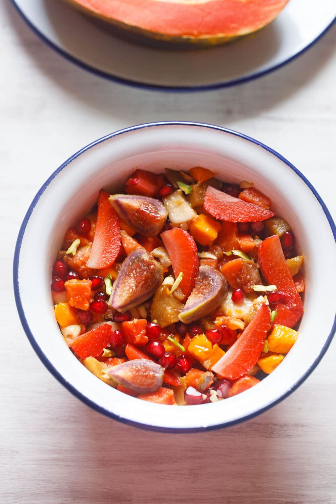

Fruit Salad

Juicy, sweet, healthy and delicious, this tropical Fruit Salad recipe is sure to become part of your regular summer recipe repertoire. Quick to prepare, easy to digest and packed with nutrients, fruit salads are perfect for this warmer weather.
Ingredients
- 2 mangoes : ripe and sweet, medium to large
- 2 bananas : medium sized
- 2 to 3 chikoo (sapodilla or sapota) : medium sized, optional
- 1 papaya : small sized or ½ portion of one large papaya
- ⅓ cup chopped strawberries or 10 to 12 strawberries
- 3 to 4 figs : fresh
- ⅓ cup pomegranate arils or 1 small pomegranate
- 2 tablespoon chopped cashews or 10 to 12, optional
- 2 tablespoon chopped almonds or walnuts, or 10 to 12, optional
- 2 tablespoon chopped pistachios or 12 to 15, optional
- 1 tablespoon honey or preferred sweetener : optional
- 5 to 6 mint leaves : optional, for garnish
Recipe
Prep Fruits and Nuts
- If using pomegranate, remove the arils first. I do this by placing halved pomegranates in a bowl of water and removing the arils in the water.
- Chop the nuts like 10 to 12 almonds, 10 to 12 cashews and 12 to 15 pistachios or any nuts that you prefer. (Feel free to lightly roast the nuts prior to chopping them for deeper flavor.)
- Thoroughly rinse the fruits : 2 mangoes, 1 small papaya, 10 to 12 strawberries, 3 to 4 figs and 2 to 3 chikoo (a.k.a. sapota or sapodilla).
Add Fruits and Nuts
- Add the chopped fruits to a mixing bowl.
- Add the pomegranate arils.
- Now add the chopped or sliced nuts like cashews, pistachios, almonds or walnuts.
Add Sweetener
- Add honey, if using. (You can also opt to use vegan sweeteners like pomegranate molasses, date syrup, palm sugar, coconut sugar or maple syrup.)
Make Fruit Salad
- Gently mix the fruits very well.
- Serve fruit salad immediately for best results. I usually like to garnish mine with a few sprigs of mint leaves (when I have a stock) or a few nuts. Enjoy!